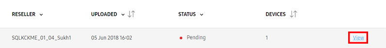

Assign a profile to a device
Last updated July 26th, 2023
Once a profile is configured, you’re ready to assign and deploy the profile to a device. The process begins with adding a wearable device to Knox Configure, then assigning and deploying a profile to the wearable device. Note that wearable devices can be locked by carriers and resellers post deployment.
Prerequisites
For a wearable device to receive push updates, it must first be connected to a network. Ensure that the user is connected through the following options:
-
Without phone connection (WPC) mode
- Connect the wearable device to a network by Wi-Fi and receive push updates set by the IT admin through an access point (AP).
- Or connect the wearable device to a mobile network.
-
Bluetooth companion mode
- Connect the wearable device to a network through a mobile device when using companion mode.
Companion mode overrides the watch’s Wi-Fi configurations and always on/off policies set by the IT admin since it automatically follows the mobile device’s network connections. To prevent configuration override, you can disable Bluetooth to prevent the user from switching from WPC to companion mode.
Use the Knox Deployment app to add a wearable device
You can use the Knox Deployment app to add a wearable device to Knox Configure. Before beginning, ensure that your wearable device is paired with a phone. Once wearable device is paired with a phone and connectivity is established, use the KDA app to deploy the Knox Configure profile and follow the prompts on your wearable device to enroll to Knox Configure:
Knox Deployment App (KDA)
To read about Knox Deployment App (KDA) and Two Factor Authentication (2FA) in detail, see Knox Configure > Features > Knox Deployment App.
Using your phone, follow the steps to use the KDA:
-
Download the Knox Deployment App from the Google Play Store.
-
Tap on the KDA app icon to open the app.
-
Enter the following information from your Samsung Account:
- Email address
- Password
-
Tap Sign in.
-
Tap Profile, then select the target configured wearable profile.
-
Tap Deployment mode > Bluetooth, then select the duration. Tap OK when done.
- Optionally set the phone to automatically accept pairing request from enrolling devices.
You can enroll wearable devices using Knox Configure:
Knox Configure for wearables support Knox Deployment apps on devices with Tizen 4.0 and above.
Enroll your wearable device
On your wearable device:
- Turn on the wearable device and go through the device setup procedures.
- If the wearable device has already been in use, you may first have to initiate a Factory reset.
- If you have not done so already, ensure that the device is connected to a Wi-Fi network.
- Once turned on, Knox Configure prompts you to begin the enrollment process for the wearable device.
- Tap Continue.
- Read the EULA and tap Agree to enroll the device. The following processes occur:
- The wearable device downloads its target profile
- If their are Tizen-based wearable apps are in the profile, the device downloads and installs those apps
- Knox Configure activates a license
- The wearable device downloads other required content
- When the wearable device is successfully enrolled, a confirmation screen displays. If configured as a ProKiosk, a reboot is required.
To reduce the labor required with large deployments, a wearable device profile push can be completed by the end user pressing FINISH on their device, or after a 5 second auto-timer expiration. The device FINISH and RESTART buttons still display, but there is a 5 second timer underneath them to complete the action with less user input. If there is no user input after the 5 second timer countdown, the device screen automatically moves to the device home screen or restarts.
Automatically add a device through your reseller
Resellers can add wearable devices to your Knox Configure account on your behalf. When a wearable device is purchased from a reseller, they can automatically upload it to your account.
Once your reseller uploads a wearable device to your KC account, you will be notified by email that you have pending uploads to view and approve. After you approve your uploaded devices, you’ll be able to assign a profile to customize the device.
Approve uploaded devices
To approve devices uploaded by your reseller:
-
Launch the Knox Configure Portal though the Samsung Knox dashboard.
-
Select Devices from the left-hand navigation menu.
-
Select UPLOADS.
-
View the pending upload by clicking View.

-
Review the upload details then click APPROVE ALL DEVICES.
-
Optionally select the following:
- Automatically approve all uploads from this reseller — All existing and future uploads from this reseller will be automatically added to your device inventory. Choosing Automatically accept all devices from this reseller allows future uploaded devices to be added to your profile without your explicit consent.
- Auto assign profile after approval — Select a default profile and license to assign to the devices uploaded to this reseller once they are manually or automatically approved.
-
Click APPROVE.
Assign a profile to a device
IT admins can use the web-based Knox Configure console to assign devices to a profile. If you haven’t already, ensure that you’ve added a wearable device to assign the profile to. Unassigned devices available for assignment are displayed on the devices list.
To assign a device to a profile:
- Select the check box of the target device.
- Click SELECT A LICENSE.
- Alternatively, you can click SKIP AND ASSIGN LATER.
To assign a device to an existing profile, see Updating an existing profile: Assign a device to an existing profile.
A profile push can be completed by the end user pressing Finish on their device, or after a 5 second auto-timer expiration. The device FINISH and RESTART buttons still display, but there is a 5 second timer underneath them to complete the action with less user input. If there is no user input before the 5 second timer countdown is completed, the device screen automatically moves to the device home screen or restarts. This reduces the labor required with large deployments, where the FINISH or RESTART button must be pressed to deploy each device.
Select a license
Select a license to use to assign a profile. If necessary, you may skip this step and create and save the profile without a license assignment.
- For Setup Edition, “Per Device Staggered” license enables efficient license utilization by ensuring a Setup Edition license is only activated once a device is activated.
- For Dynamic edition, “Per Seat” license enables IT admins to revoke a license on a device, for example a previous employee’s device, and utilize the license on a different device using the same Dynamic edition profile. This increases the available license count and improves license provisioning with the Dynamic edition profile.
Note that only active licences are compatible with this profile display. If you haven’t yet, ensure you obtain a valid license for Knox Configure.
To select a license:
- Click the radio button under License name.
- Press Next.
Review device details and device logs
Admins may need to periodically review device details and logs to assess a managed device’s current configuration and event history.
To review device details and logs:
-
From the left-hand navigation, select Devices.
-
Click the DEVICES tab.
-
Click on the target device’s DEVICE ID link.
-
Click the View device log link.
-
Review the following device log information:
- STATUS — View the configuration or profile assignment activity logged on behalf of the target device.
- EVENT — View the device configuration or profile assignment event logged on behalf of the target device. Displays error codes and warning messages with links for additional details when applicable.
- TIME — View the date stamp for when the event occurred.
- EXPORT TO CSV — Export the device log file for archiving.
-
Click OK to return to the device details screen.
Tutorial Progress
Congratulations, you’ve completed 4/4 steps! You’re ready to learn more about Knox Configure’s features.
On this page
Is this page helpful?